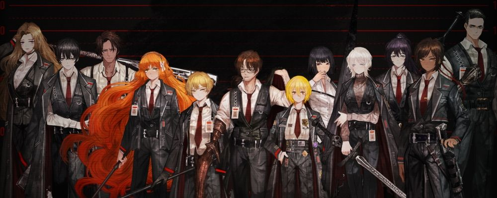
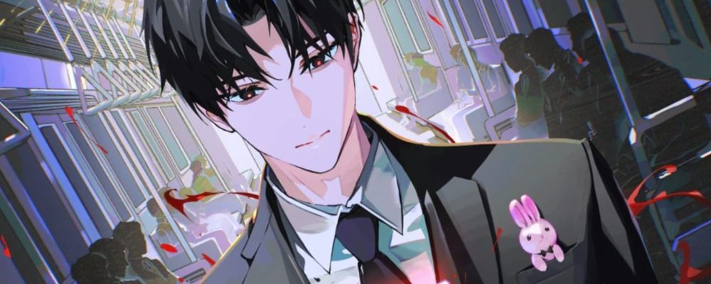
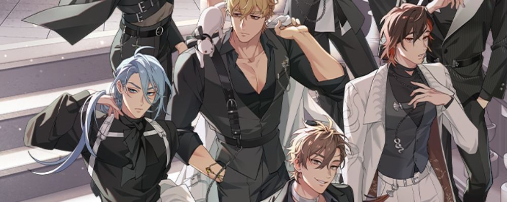
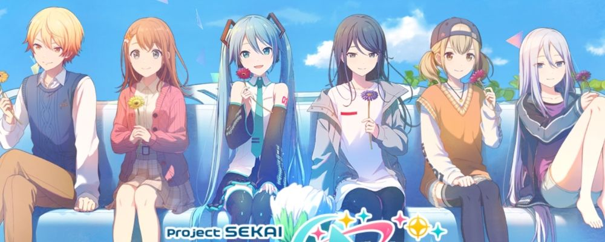

Limbus Company

08.03.2026: I played Limbus Company since 4th Walpurgisnacht (in fact,
Solemn Lament Yi Sang was one of my first obtained *3 identities), and
I have finished Canto 9 by the time I write in this page. Limbus is..
gacha game, of course, but it's pretty generous and forgiving once you
purchase Battle Pass. It's not really expensive considering Limbus
season can span up to 6 months—the battle pass is per season, not per
month. Honestly though, after playing this game for 3 seasons, I groan
when it's time to pay our dearest Project Moon haha.
The battle system can be confusing to beginners, I recommend watching
YouTube videos to see how other players direct the skills. There's
some technique you can only learn from observing advanced player, such
as when to evade, how to solo with one identity, choosing support and
team-building, what E.G.O gifts you should buy in Mirror Dungeon, etc.
The story focused on each "Sinners" as the character is adapted from
literature, some people might already familiar with the name Don
Quixote or Gregor from Franz Kafka's Metamorphosis. Project Moon put
their spin in worldbuilding aspect, it's so satisfying to see
Checkov's Gun
being paid off in new released Canto (chapter). Personally sometimes I
find the jargons ridiculous and difficult to understand, since Limbus
often mention its world's advanced technologies.
Since the Sinners are
Ragtag Bunch of Misfits, I favor Intervallo (short story between the Cantos) than actual
main plot, since they interact with each other and every personalities
shine. Not to mention in such grim and heavy atmosphere, the
Intervallos are usually more lighthearted, if not silly.
My favorite Sinner out of everyone is
Heathcliff, because despite his initial rough impression, he's caring to other
Sinners. You can say, because he prefers to solve problem by swinging
a bat, he comes across as genuine when he expresses vulnerability.
Uh.. yeah, his design with rolled sleeves and snatched waist are hot,
but that's not the point! (lmao)
My other favorite characters are
Faust, because
her voice is pleasant to listen, she's pretty, and she's perceived as
arrogant despite there's glaring flaw in way she obtained this high
level of intelligence. Next, ginger hair
Ishmael. Of
course, she's pretty (2), and I think her personality is multi-faceted
and interesting. At times I dislike her because Ishmael often
antagonizes Heathcliff (siblings energy..), but Ishmael is also
cautious enough, she's always the first to prepare and do sensible
stuff.
I can confidently say I like everyone to certain degree :) Depending
on the mood, who's I'm gonna simp more. In case of shipping, I
followed many Meursault x Heathcliff fanartist. Recently my interest
has been dipped, yet I still see them as funny duo together, with
Meursault's deadpan humor and Heathcliff getting ragebaited.
Got Dropped into a Ghost Story, Still Gotta Work
(괴담에 떨어져도 출근을 해야 하는구나)

08.03.2026: In short, this novel is abbreviated into "gsgw" by
English-speaking fandom, heavily influenced by SCP Foundation setting.
Readers who liked Omniscient Reader's Viewpoint can immediately see
the similarities between Kim Dokja (ORV's MC) and Kim Soleum (gsgw's
MC). I enjoyed this novel more than ORV though. Kim Soleum is a reader
and writer who immersed himself in Dark Exploration Records—akin to
creepypasta wiki, before he wakes up in alternate universe.
As a character, Soleum's internal monologue is considered cowardly,
but his actions are andrenaline-pumping, almost reckless for other
casts in the novel. He oftens resorts to gaslighting people, which I
find intriguing. Similar to Limbus, gsgw often pull a satisfying
foreshadowing, and I mean it. This novel has two parts, as far I have
read at chapter 250+, it still references elements from veryyy early
arc.
Soleum is often switching workplaces, form/persona, teams.. supporting
characters are diverse and each team has distinct dynamic. My
favorite, aside from Sir Soleum himself, is Agent Choi. He might be
deemed as fandom's favorite because large amount of fanart I have
seen. It might come as surprise but I don't have exclusive
ship in gsgw, so I frown at ChoiSol
(Agent Choi x Kim Soleum) fans. Next, less popular one, is Park
Minseong. I am just weak to puppy, sunshine senior trope. Yet the plot
he's involved with is sad...
English translation for gsgw is difficult to obtain, few months ago a
fan-translation site got sued by the publisher. You can still obtain
one if you look hard enough, or just use help of machine. I may finish
reading this novel someday..
NU: Carnival

09.03.2026: I play this game again after seeing 4th anniversary art
passing by in my Twitter feed. At first I just liked one post, then
every "EDMOND IS SO BEAUTIFUL" screams appear without invitation. Then
I know I need to check this out.. The ero version is too dangerous to
play at workplace (I have tried it year before!), so Bliss
version—vanilla Play Store-safe one, it is.
I haven't read the main story far (I tend to slack with live service
games), so I can't comment much. I think the writing style is funnier
than I expected, often playing into
tsukkomi
territory. My favorite character after returning to the game? No, it's
not Edmond. It's
Rei. Listen, I
actually heard the news when he was first released, okay? Everyone
said "Wow dom bottom, finally". But I didn't want to touch the
swamp that is dangerous yaoi gacha!
Well, anyway, don't expect too much gameplay-wise, it's turn-based
card like thousands of gacha out there. Judging from Limbus standard,
this game is definitely stingy. What do you mean 6000 gemstone for 10
pulls?? At least I have learned how to save.
Project Sekai / Colorful Stage

09.03.2026: I experienced love-hate with this game and its fandom. I
was active the most in 2023, I did solo-tiering (climbing to event
point's leaderboard) up to rank 1000 several times in Global server.
The song selection is banger, and I often check see what kind
commissioned song they cook this week. Before people jump and point
fingers at me, I listen to Vocaloid songs since 2012. I am one of the
target audience for Vocaloid nostalgia, okay?
Story-wise, meh. I used to religiously read the stories, both in
Global and JP server (don't ask how I understand Japanese, I was crazy
like that). They repeat plot points over-and-over again, using
character past as filler instead of advancing the resolve. They also
have found guilty writing stories with wrong detail compared to
previous event.. even to its own main story. As game published in
Japan, the narration often glorify pushing limit to extreme, working
til their bones dry. Mind you, the characters are in school age! The
silver lining is sometimes the stories (and mini-conversations) offer
applicable advice, I was feeling inspired by the game.
The fandom? Rancid. Shipping war, discourse about character gender,
NSFW works that makes me want to bleach my eyes.. In game, toxic
picking song behavior in public lobby, meltdown over tiering rank,
randomly banning their biggest whale for entire week.. Merch-wise?
Small proxies stealing money and not deliver the merch ordered from
split box or mercari..
Yeah, I learned not to interact with fandom thanks to Proseka :) I
might write what song I like from this IP later.